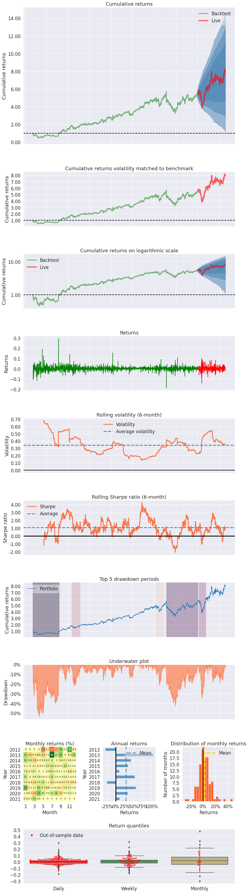

Intro¶
Here’s a simple example where we produce a set of plots, called a tear sheet, for a single stock.
Imports and Settings¶
[1]:
# silence warnings
import warnings
warnings.filterwarnings('ignore')
[2]:
import yfinance as yf
import pyfolio as pf
%matplotlib inline
Download daily stock prices using yfinance¶
Pyfolio expects tz-aware input set to UTC timezone.
You may have to import yfinance first by running:
pip install yfinance
[3]:
fb = yf.Ticker('FB')
history = fb.history('max')
history.index = history.index.tz_localize('utc')
[4]:
history.info()
<class 'pandas.core.frame.DataFrame'>
DatetimeIndex: 2243 entries, 2012-05-18 00:00:00+00:00 to 2021-04-19 00:00:00+00:00
Data columns (total 7 columns):
# Column Non-Null Count Dtype
--- ------ -------------- -----
0 Open 2243 non-null float64
1 High 2243 non-null float64
2 Low 2243 non-null float64
3 Close 2243 non-null float64
4 Volume 2243 non-null int64
5 Dividends 2243 non-null int64
6 Stock Splits 2243 non-null int64
dtypes: float64(4), int64(3)
memory usage: 140.2 KB
[5]:
returns = history.Close.pct_change()
Create returns tear sheet¶
This will show charts and analysis about returns of the single stock.
[6]:
pf.create_returns_tear_sheet(returns, live_start_date='2020-1-1')
| Start date | 2012-05-18 | |||
|---|---|---|---|---|
| End date | 2021-04-19 | |||
| In-sample months | 91 | |||
| Out-of-sample months | 15 | |||
| In-sample | Out-of-sample | All | ||
| Annual return | 24.723% | 34.871% | 26.149% | |
| Cumulative returns | 436.882% | 47.255% | 690.583% | |
| Annual volatility | 36.174% | 43.171% | 37.263% | |
| Sharpe ratio | 0.79 | 0.91 | 0.81 | |
| Calmar ratio | 0.46 | 1.01 | 0.49 | |
| Stability | 0.88 | 0.64 | 0.89 | |
| Max drawdown | -53.623% | -34.592% | -53.623% | |
| Omega ratio | 1.17 | 1.17 | 1.17 | |
| Sortino ratio | 1.21 | 1.33 | 1.23 | |
| Skew | NaN | -0.19 | NaN | |
| Kurtosis | NaN | 3.52 | NaN | |
| Tail ratio | 1.07 | 1.08 | 1.05 | |
| Daily value at risk | -4.444% | -5.283% | -4.575% | |
| Worst drawdown periods | Net drawdown in % | Peak date | Valley date | Recovery date | Duration |
|---|---|---|---|---|---|
| 0 | 53.62 | 2012-05-18 | 2012-09-04 | 2013-08-05 | 317 |
| 1 | 42.96 | 2018-07-25 | 2018-12-24 | 2020-01-09 | 382 |
| 2 | 34.59 | 2020-01-29 | 2020-03-16 | 2020-05-20 | 81 |
| 3 | 22.06 | 2014-03-10 | 2014-04-28 | 2014-07-24 | 99 |
| 4 | 21.17 | 2018-02-01 | 2018-03-27 | 2018-06-01 | 87 |

[ ]: